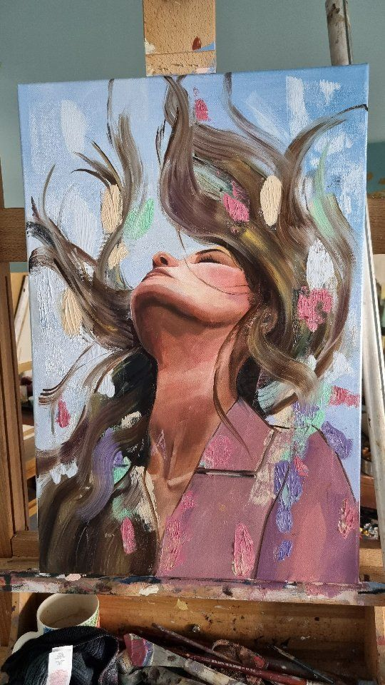
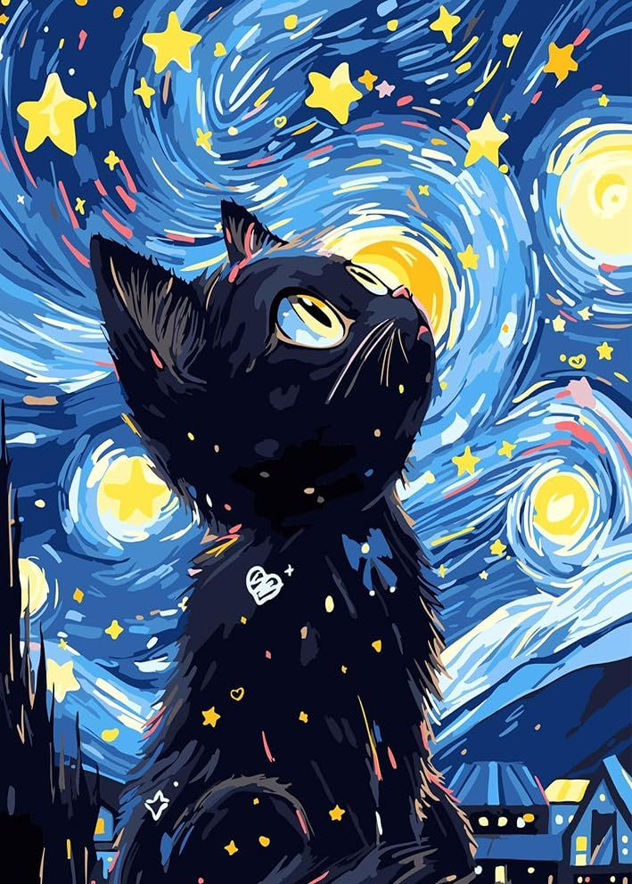

Painting 1 /* particular word style cheyyen alle vere css kodkkn*/
oil painting, painting in oil colours, a medium consisting of pigments suspended in drying oils.
The outstanding facility with which fusion of tones or colour is achieved makes it unique among
fluid painting mediums; at the same time, satisfactory linear treatment and crisp effects are easily obtained.
Opaque, transparent, and translucent painting all lie within its range, and it is unsurpassed for textural variation.
 Painting 2
Painting 2
Acrylic paint is a fast-drying paint made of pigment suspended in acrylic polymer
emulsion and plasticizers, silicone oils, defoamers, stabilizers, or metal soaps. Most
acrylic paints are water-based, but become water-resistant when dry. Depending on how much the paint is
diluted with water, or modified with acrylic gels, mediums, or pastes, the finished acrylic painting can
resemble a watercolor, a gouache, or an oil painting, or it may have its own unique characteristics not attainable with other media.

Painting 3
Digital painting is the creation of imagery on a computer, using pixels
(picture elements) which are assigned a color. The process uses raster
graphics rather than vector graphics, and can render graduated or blended
colors in imagery which mimics traditional drawing and painting media